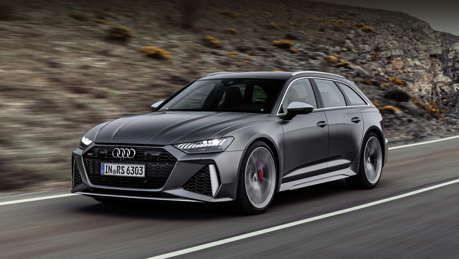

Audi (Німецька: [ˈʔaʊ̯diː ˈʔaːˈgeː] ( прослухати); укр. Ауді) — з 1909 року німецький виробник автомобілів. Штаб-квартира розташована в місті Інгольштадт. У 1928 році компанію купує Йорген Расмуссен. Сьогодні компанія займається виготовленням престижних автомобілів.Витоки компанії складні і починаються з початку 20 століття: початкові підприємства (Horch і Audiwerke), засновані інженером Августом Горхом, і два інших виробника (DKW і Wanderer), об'єднуються у компанію Auto Union у 1932 році. Сучасна епоха Audi почалася в 1960-х роках, коли Auto Union був придбаний компанією Volkswagen у фірми Daimler-Benz. Після перезапуску бренду Audi із введенням в 1965 році серії Audi F103, Volkswagen об'єднав Auto Union з NSU Motorenwerke у 1969 році, створюючи таким чином сучасну компанію.Назва компанії базується на латинському перекладі прізвища засновника Августа Горха. «Горх», що означає «слухати» німецькою мовою, стає «audi» латинською мовою. Чотири кільця логотипу Audi представляють одну з чотирьох автомобільних компаній, які об'єдналися для створення попередника Audi — Auto Union. Гасло Audi — «Vorsprung durch Technik», що означає «Прогрес через технології». Однак Audi USA використовували гасло «Правда — в інженерії» з 2007 по 2016 рік, а з 2016 року не використовували слоган. Audi разом з BMW та Mercedes-Benz є одними з кращих марок розкішних автомобілів у світі.